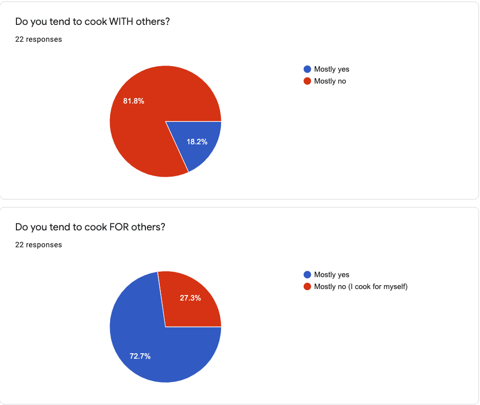
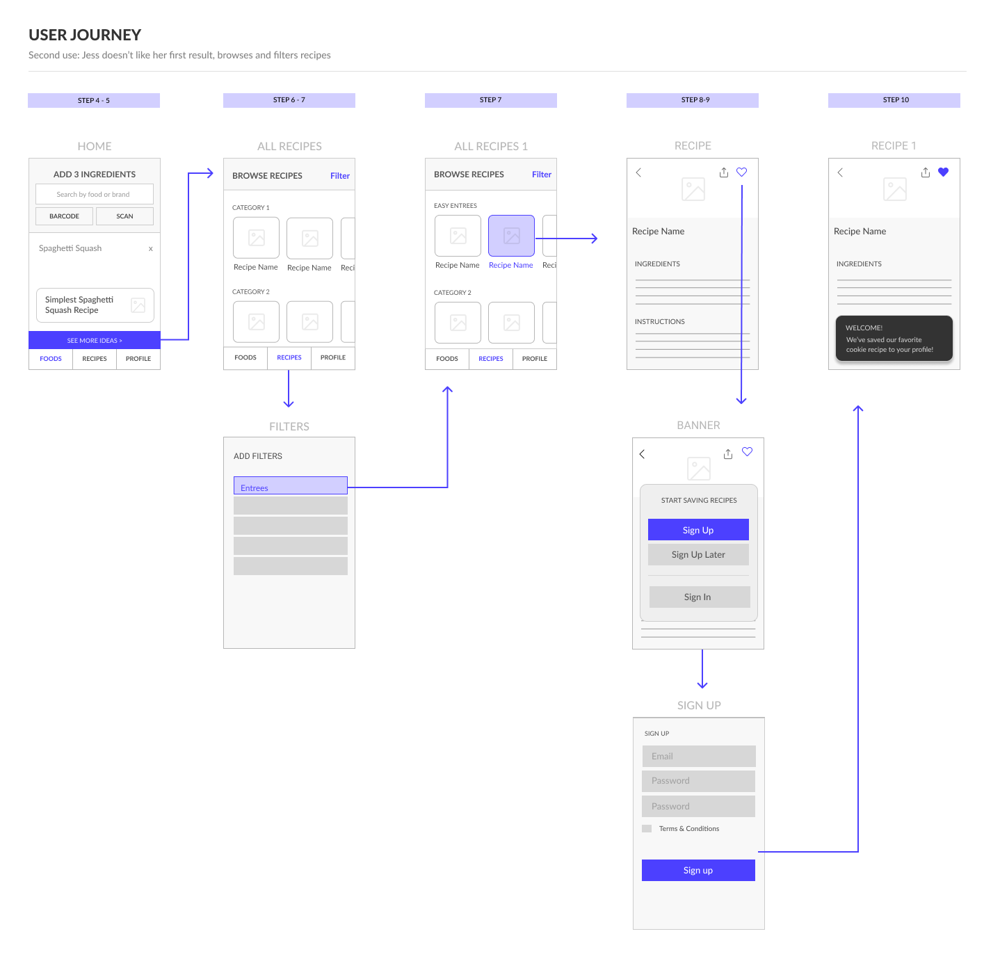
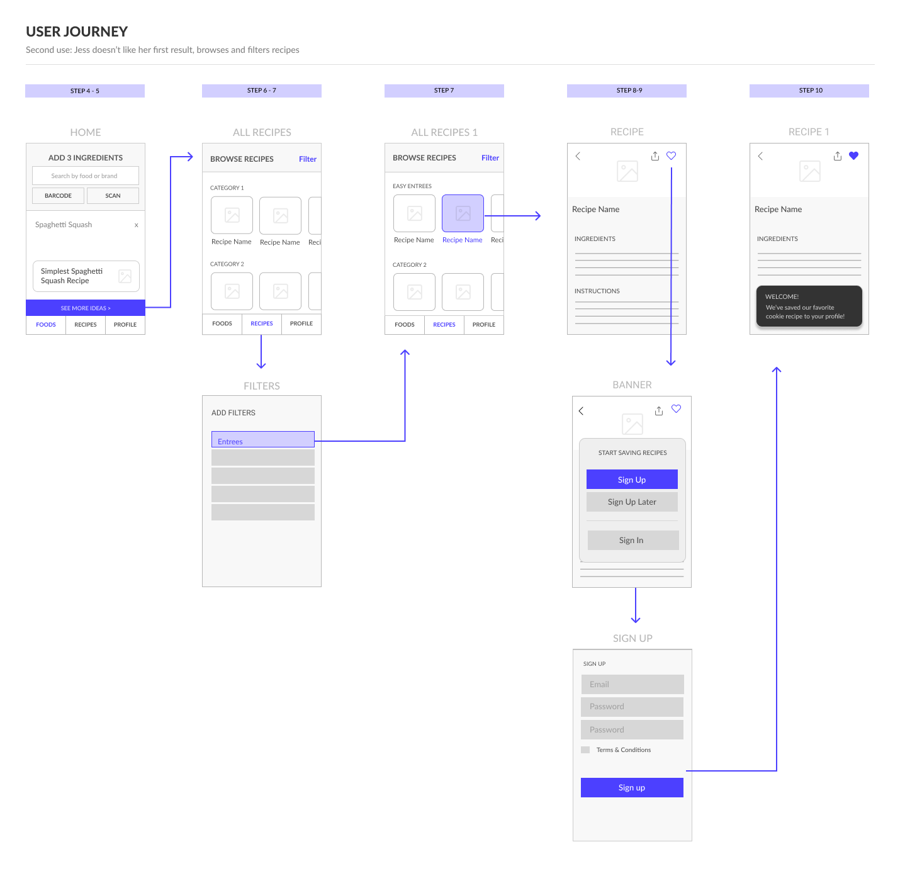

Kitchen Appetite is a Kickstarter-funded project by entrepreneur Ben Gulick. This app helps home cooks discover simple dishes they can create with ingredients they have on hand. Perfect for quarantine!
I was brought onboard to revamp the UX and UI of a prototype app for Kitchen Appetite, but soon saw that there were greater problems surrounding the core product, value proposition and understanding of the user. In short, the problem was that the app was a solution looking for a problem.
An overseas development team built a fully-functional app from a set of lo-fidelity wireframes (from another designer). Here is the 'before' app:

The original product vision was an effortless recipe-finding experience where a user could 'scan' ingredients they have on hand using their phone camera (i.e. Shazam for your fridge). See the product description on kickstarter.
Here is my illustration of the envisioned experience

I tested the prototype and found some key problem areas:
1. The image-recognition API was error-prone.
Current technology could not achieve the effortless food-scanning experience envisioned by the founder. For this technology to be useful (and not just a gimmick), it would have to be as easy and accurate as typing into a search bar.
2. Searching recipes by ingredients had limitations.
Users could save unlimited ingredients, but could only search recipes by 6 ingredients. This led to an awkward 2-step process to search. I also questioned the utility of saving a long list of ingredients (food in the fridge changes quickly).
Even if this product existed as envisioned, it was not clear what kind of cook the product was for or the pain point that would make them open up the app to scan ingredients.
After discussing much discussion with the founder, we agreed that the right step would be to stop development and do some research before jumping into a new design.
We also arrived at a hypothesized problem statment for the app to solve: People often have perishable food items that they don't know what to do with. My research aimed to validate this hypothesis and focus the product toward the needs or real users.
My research covered three areas:
I then created a primary persona for Kitchen Appetite using the results of the user research.
I interviewed 5 participants recruited from the founder's extended network. All 5 made over half of their meals, although many were packaged. 2 of 5 planned weekly meals in advance, with many homecooked meals being 'in the rotation' of recipes. 4 of 5 reported that they improvised in the kitchen, and 2/5 said they would often be unsure how they would prepare a food item they had. 5/5 said searching by ingredient would be helpful, but were skeptical of image recognition being helpful.
To discover more about the user persona I developed a survey to give to Kitchen Appetite backers (from Kickstarter) and social media communities. Although this sample was not representative of all possible home cooks, it was a starting place from which the minimum viable product could be based. The goal was to discover more about the needs and painpoints around cooking and recipe-finding, and validate our hypothesis.
One key assumption was that not knowing what to cook is a big problem. In our sample of 22 survey respondants. This assumption got some support. When asked to select what their biggest barrier to cooking was, 47% chose “Not enough time” but second to that, 24% chose “not knowing what to cook” was their biggest barrier.
Exploratory questions about habits and goals provided further information about the contexts and goals of the respondants. Below are two examples.
Insights such as these helped us understand the type of situation our home cook persona was. They are most likely working people, cooking solo, for others. The goal of making a meal everyone will like was more pressing than the goal of making something interesting or amazing. When asked for recipe hunting techniques, the top two were "meals under 30 minutes" and "recipes for ingredients you have onhand."
The Yummly, Google Vision, and Amazon Rekognition were some of the alternative food image recognition APIs to ours (Calorie Mama). Yummly has already deployed this API to 'Smart Appliances' from Whirlpool that can visually scan and identify foods and give you recipe recommendations based on what it sees.
My testing of all of these APIs found that none were accurate enough to provide the food recognition / recipe recommendation experience. Even accurately identified foods were often tagged according to a general category (i.e., cheese but not blue cheese), which can have big implications for recipes. Furthermore, packaged foods were not universally recognizable (Calorie Mama couldn't recognize them at all).
The founder was excited to pursue this technology, and wanted to include it in the app beta. However we agreed it would be a secondary way to add ingredients and not the primary flow.
I evaluated several different apps in terms of their user experience and product focus. Most had a range of recipe levels (easy to complex). Several helped you build a shopping list and purchase groceries. Yummly was the only app that offered flow of adding a few ingredients to find a recipe (e.g. improvising with whats on hand). The recipe matches for this flow were not always so simple. When considering the user interviews I had completed, it was clear that if cooks were in the mode of improvising a meal, recipe matches that were simple needed to prioritized (so little to no shopping was required).

The new pitch: Kitchen Appetite helps you improvise a simple meal with foods you have on hand.
The research validated the hypothesis that people get stuck knowing what to make. Solving this problem resonated with the founder, even though image recognition wouldn't be the main way we solved it. We loved the idea of helping someone like Jess improvise a simple delicious meal (only one app we saw did that). The recipe ideas would be simple rather than aspirational, with the simplest shown first. This refocusing inspired the founder to start building branded 'ingredient guides' that help users make simple meals from a basic ingredient.
With our shiny new persona, I then created a list of tasks, and began to create journey maps of different scenarios.
 

After journey mapping, I drafted a full wireframe of the app. This is only a portion of the wireframe shown.
My next step was to build a full lo-fidelity prototype. One my of key design choices was to downplay the food and scanning technology. Although this was the original vision for the app, it would take more R&D and machine learning to add ingredients with the speed and accuracy of a search bar.I brought this wireframe to the development team. They found no real problems except one. The image scanner needed a button in order to limit the number of API calls to the image recognition service we were using. That was simple enough to add.
User testing sessions were conducted with 5 individuals. 5/5 were able to add an ingredient using all 3 methods. The participants also appreciated the narrow focus of the app and emphasis on simple recipes only.
Simple
Joyful
Supportive
These were the three words Ben felt captured the Kitchen Appetite brand. He wanted the vibe to touch on nostalgia, family in the kitchen, and something playful but mature. The logo inspiration was colored alphabet fridge magnets. The logo had many wonderful colors to play with.

I created a mood board to try and capture the vibe and color palette. I took the green, brown, and blue from the logo and a lighter blue for a simple palette. I decided that ingredient photography could use simple backgrounds and food photography would be more complex, showing process (stirring) or plating on casual-looking tables or counters. I felt we could also use custom illustration for Kitchen Appetite's ingredient guides (in process), and thought a simple, abstract illustration style would work well with the brand.
I applied the style and developed a design system. Below are the final mockups for adding ingredients.

The previous prototype of kitchen appetite allowed for unlimited ingredients (but a limit of 6 ingredients to search). This limited allowance of 3 ingredients eliminated this clutter, and the popup result of the simplest recipe idea focused the experience to meet the needs of our persona. Below are the other screens in the app.

I am currently managing the team in India to implement these designs. We hope to begin a closed beta test in August 2020 with the Kickstarter Backers. Initially we will be evaluating the the usefulness of the app UI and the quality of recipe matches. This has been a really fun project to be a part of!